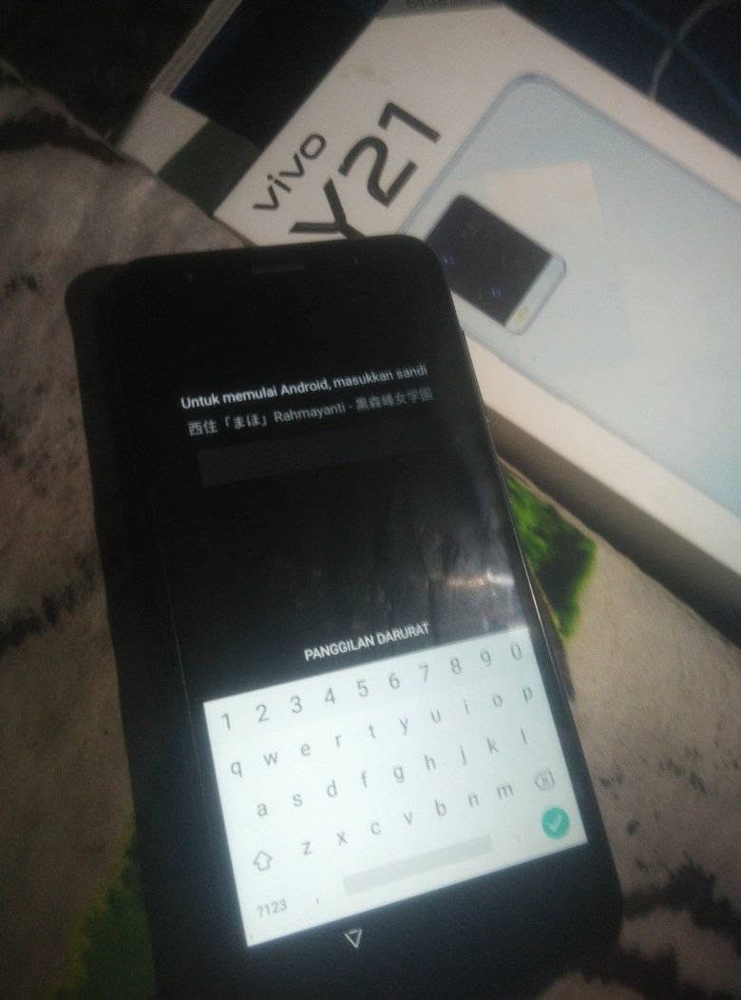
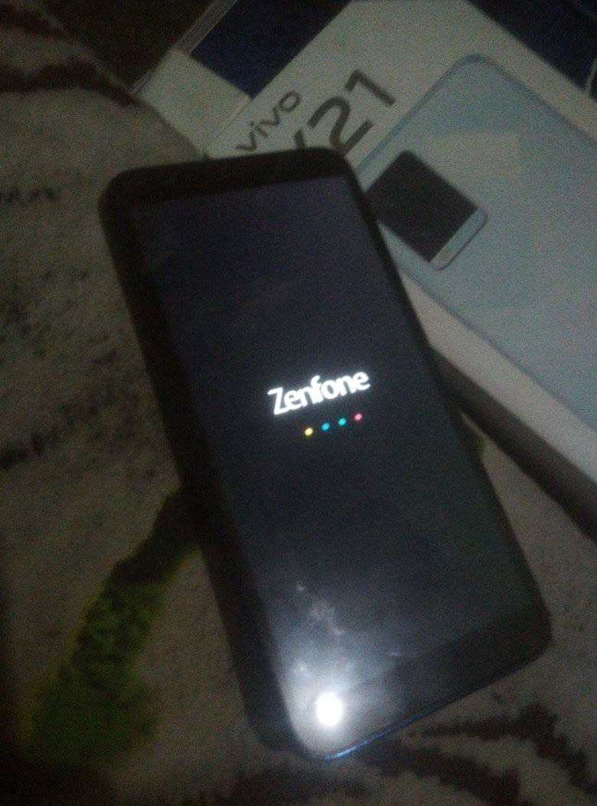
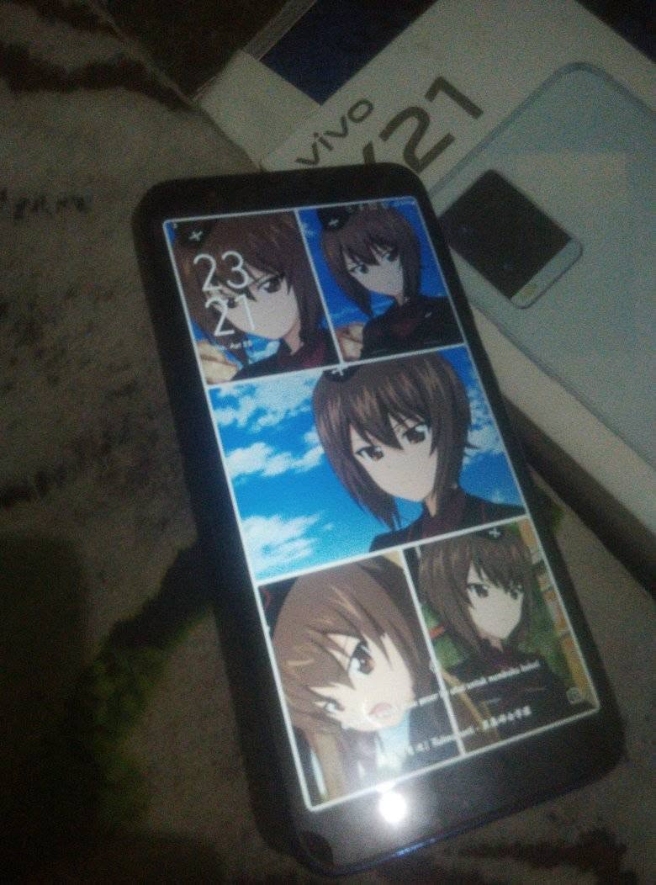
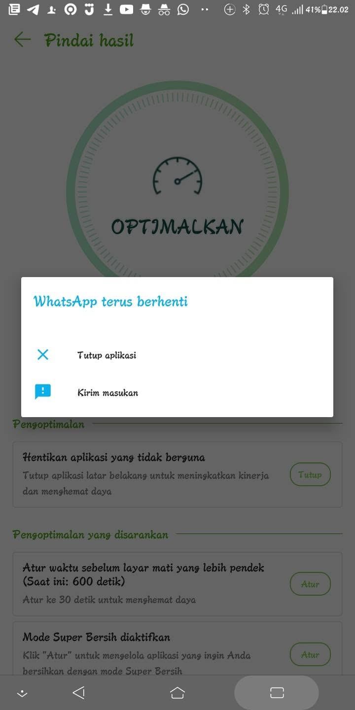
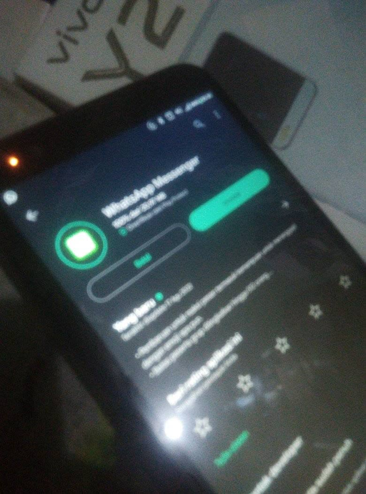
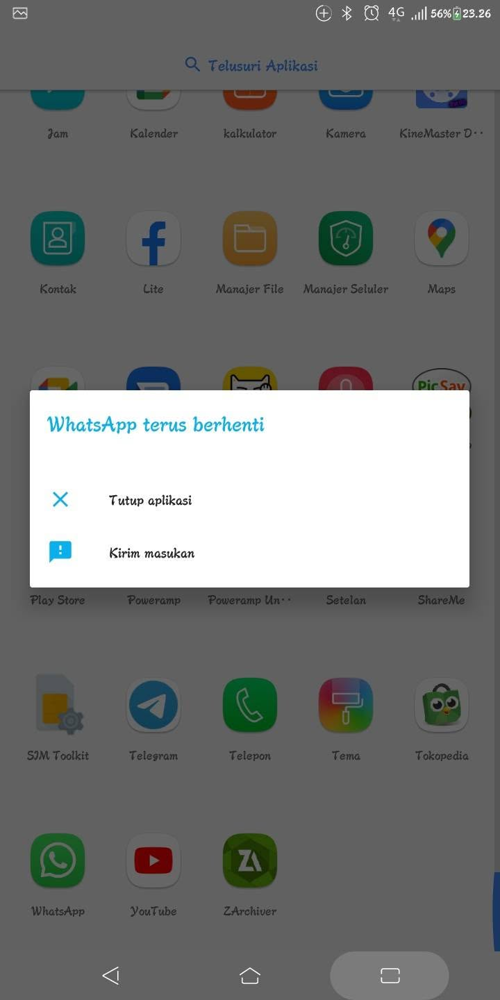
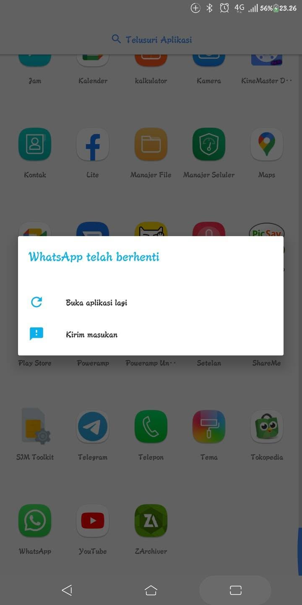

Hadeh, gegara efek dipake dokumentasi Konten Rekam Random malah jadi gini Wangsaff jadi FC, tetapi app lain aman Tadi siang sempet sisa 200 KB an karena dipake rekam YT Shorts, langsung muncul notif "terjadi kesalahan dengan histori chat anda", langsung bersihkan cache dan hapus sebagian rekaman, tersisa 118 MB Malam tadi masih bisa wangsaffan, sempat teleponan dengan Allam dan Enean (ngajak mabar epep) Chat an sama Allam, chat an sama Enean, chat an sama Ramdhani, dan ngechat ajakan mabar di grup Ingfo Permabaran Pripayer Disaat lagi fokus ke hp satunya yg dipake main epep (advan nasa plus) dan mau buka wangsaff di Sorod, eh malah FC SEKETIKA LANGSUNG PINDAHKAN HASIL REKAMAN, SS AN, DLL KE GD DAN SDCARD Kosong 1.02 GB, langsung reboot Booting selesai Cek lagi, buka wangsaff, eh anj masih FC app nya, sya coba update, eh masih sama aja Afkh perlu install ulang biar normal lagi?






